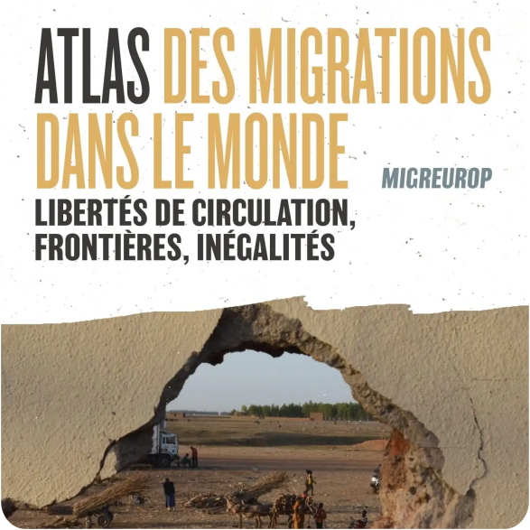
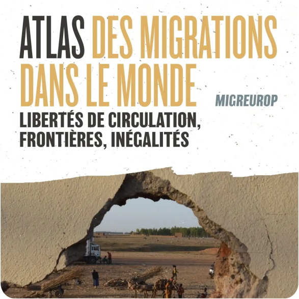
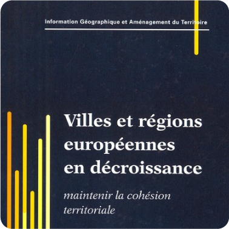
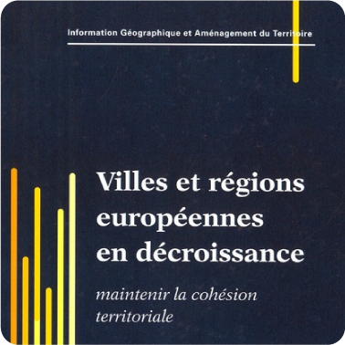
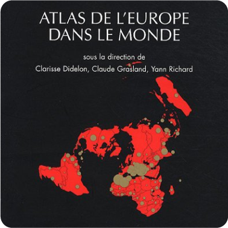
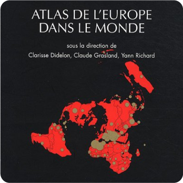

Nicolas Lambert
Nicolas Lambert
In this section, I list the books I've worked on. First, those for which I am the principal author. Then those on which I have worked a lot and fulfilled coordinating functions.
As lead author

Key contributions & coordination
2022


2019

2017
2013
2010


2009

